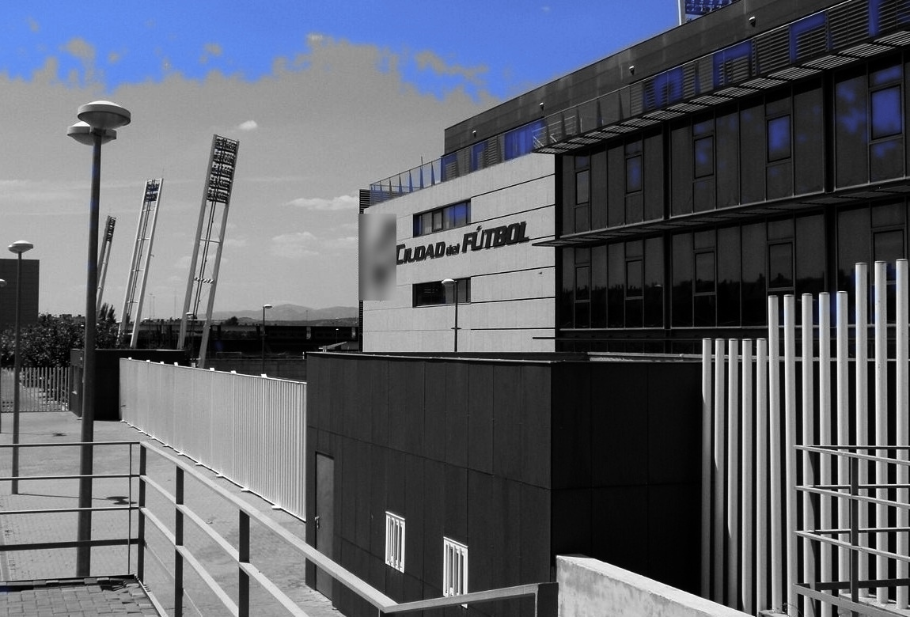
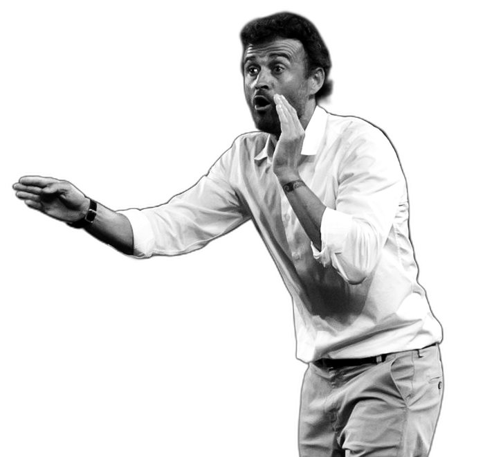
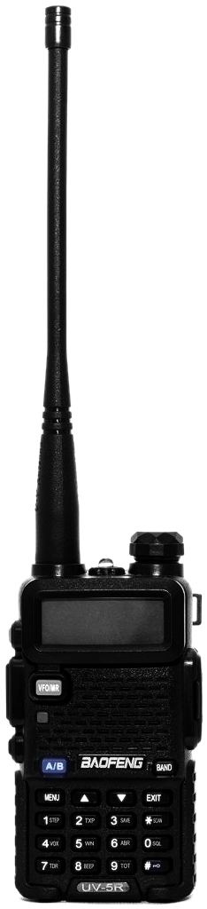

SEPTIEMBRE
2022
RECREACIÓN
PRENSA · SELECCIÓN ESPAÑOLA
LIGA DE NACIONES
CONVOCATORIA

LAS ROZAS · CIUDAD DEL FÚTBOL
FOTO: ROBERTO · CC BY-SA 3.0 (MODIFICADA)
CAMPO Y CONOS: DIBUJO

FICHA
FOTO: LLUÍS FROM SABADELL · CC BY 2.0 (MODIFICADA)

RECREACIÓN · FOTO: ВАРВАРА КАМИНСКАЯ · CC BY-SA 4.0 (MOD.)
ANDAMIO: RECREACIÓN
CHALECOS: RECREACIÓN
POR LA RADIO
— L. Enrique, sept. 2022
KOKE
MORATA
GAVI
PIZARRA: RECREACIÓN
«así no me dejo la garganta»
MEGÁFONO: DIBUJO
Fotos: Lluís from Sabadell (CC BY 2.0) · Roberto (CC BY-SA 3.0) · Варвара Каминская (CC BY-SA 4.0), modificadas, vía Wikimedia Commons.
Andamio, chalecos, pizarra y megáfono: recreación.